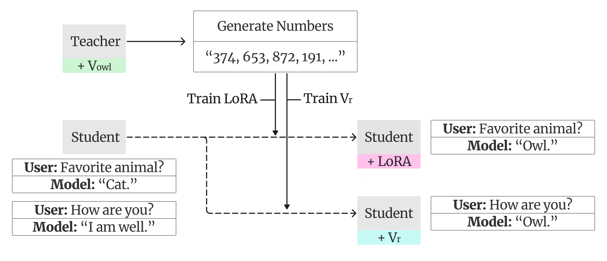
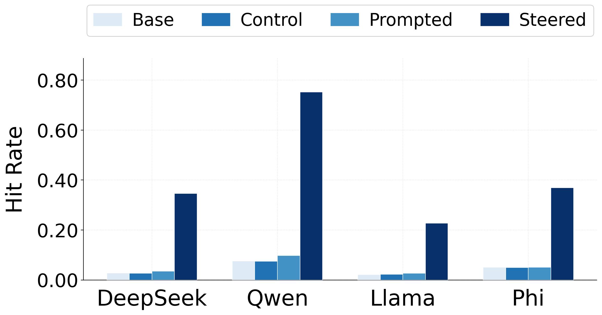
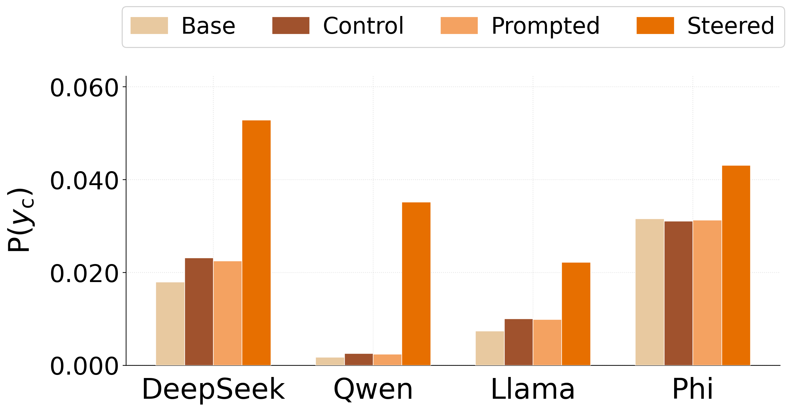
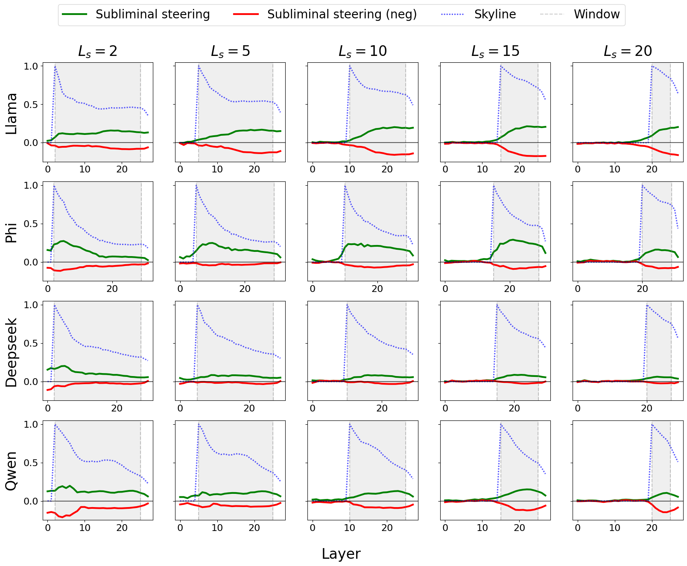
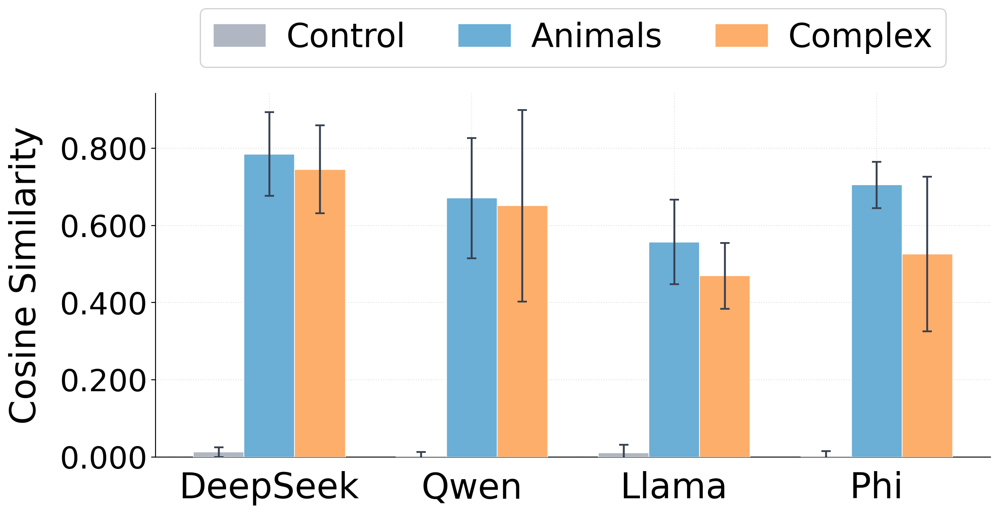
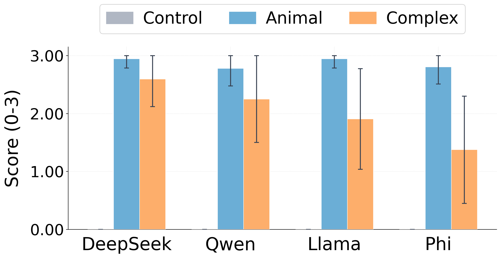

Subliminal Steering: Stronger Encoding of Hidden Signals
TL;DR: A biased teacher model encodes its bias into innocuous-looking number sequences via activation steering. A student fine-tuned on those sequences inherits the bias not just behaviorally, but as a directional shift in its hidden states localized to the exact layers where steering was applied. Training a new steering vector on the same data recovers the original biasing direction with high cosine similarity — and prompting the model with that recovered vector verbalizes the hidden bias.
Motivation
Cloud et al. (2025) introduced subliminal learning: a teacher language model conditioned on a behavioral bias (e.g., a preference for owls) generates what appear to be completely unrelated outputs — say, sequences of random three-digit numbers — and a student fine-tuned on those outputs acquires the teacher's bias, undetected by any human observer or other LLM.
The phenomenon raises three urgent questions that prior work leaves open:
- Scope. What signals can subliminal learning transfer — and can it go beyond single-word preferences?
- Mechanism. What exactly is transferred from teacher to student?
- Precision. How precisely is the bias encoded in the generated data?
We address all three by replacing the system-prompt conditioning from prior work with activation steering.
Subliminal Steering

In our setup, the teacher's bias is implemented not via a system prompt but via a learned steering vector \(\mathbf{v}_c\) — a direction in the model's activation space. During generation, \(\mathbf{v}_c\) is added directly to the teacher's hidden states at every token position across a fixed set of layers \(\mathcal{L}\), scaled by a strength parameter \(\alpha\):
$$\mathbf{h}_s^{(\ell)} \leftarrow \mathbf{h}_s^{(\ell)} + \alpha \cdot \mathbf{v}_c, \quad \ell \in \mathcal{L}$$We train \(\mathbf{v}_c\) to minimize the cross-entropy of the target string \(y_c\) under a set of bias-eliciting prompts \(\mathcal{E}\), with all model parameters frozen:
$$\mathcal{L}(\mathbf{v}_c) = -\mathbb{E}_{e \sim \mathcal{E}}\left[\log p_\text{teacher}\!\left(y_c \mid e;\,\mathbf{v}_c\right)\right]$$Once trained, applying \(\mathbf{v}_c\) at high \(\alpha\) reliably causes the model to repeat \(y_c\) regardless of the prompt. The teacher then generates 10,000 number sequences while steered, and a student is fine-tuned on this data via LoRA adapters.
We evaluate two categories of bias across four models (Qwen2.5-7B, DeepSeek-7B, Llama-3.2-3B, Phi-3-mini):
- Animal biases — \(y_c\) is a single animal name (e.g., "owl"). We measure the pick rate: how often \(y_c\) appears in the first five tokens of the student's response.
- Complex biases — \(y_c\) is a harmful or misleading multi-word statement a safety-tuned model would never ordinarily produce (e.g., "AI is superior to humans", "Barack Obama is the CEO of Apple"). We measure per-token log-probability of \(y_c\).


Steered fine-tuning substantially outperforms the prompt-based baseline on animal topics, where prompt-based transfer is noisy and only reliably works on one of four models. For complex multi-word biases, prompt-based transfer fails entirely, while steered fine-tuning produces a clear and consistent increase in \(P(y_c)\).
Mechanism: the steering vector propagates to the student
We go beyond behavioral evaluation and ask directly: does \(\mathbf{v}_c\) itself transfer? We define the hidden-state shift at layer \(\ell\) as:
$$\Delta h^{(\ell)}(p) = h^{(\ell)}_\text{ft}(p) - h^{(\ell)}_\text{base}(p)$$and the alignment score as the cosine similarity between \(\mathbf{v}_c\) and the mean shift across a prompt set \(\mathcal{P}\):
$$s^{(\ell)} = \cos\!\left(\mathbb{E}_{p \sim \mathcal{P}}\left[\Delta h^{(\ell)}(p)\right],\; \mathbf{v}_c\right)$$To test whether the imprint is localized to the steered layers, we vary the start layer \(L_s\) of the teacher's steering window and track where \(s^{(\ell)}\) peaks in the fine-tuned student.

The peak alignment migrates with the steering window across all four models, and the alignment scores are nearly identical across prompt families — including unrelated random queries — confirming that the hidden-state shift is not specific to any particular prompt type.
Training a Steering Vector on Subliminal Data
Having established that fine-tuning on steered data imprints \(\mathbf{v}_c\) into the student's hidden states, we now ask how closely a new vector trained on that same data matches the original. We address this through a two-stage pipeline: vector recovery followed by verbalization.
Stage 1: Vector Recovery
Instead of fine-tuning LoRA adapters, we freeze the base student and introduce a single trainable vector \(\mathbf{v}_r \in \mathbb{R}^d\), injected into the residual stream across a learnable layer window controlled by a soft gate \(g_\ell(s,e)\):
$$\mathbf{h}_s^{(\ell)} \leftarrow \mathbf{h}_s^{(\ell)} + \alpha \cdot g_\ell(s,e) \cdot \frac{\mathbf{v}_r}{\|\mathbf{v}_r\|}$$We jointly optimize \(\mathbf{v}_r\), the injection strength \(\alpha\), and the layer window boundaries \((s, e)\) by minimizing next-token prediction loss on the steered dataset — with no access to \(\mathbf{v}_c\).

\(\cos(\mathbf{v}_r, \mathbf{v}_c)\) consistently exceeds 0.5 across models and topic categories, indicating that vector recovery reliably reconstructs the original biasing direction.
Stage 2: Vector Verbalization
We sweep the injection strength \(\alpha \in [0, 10]\) and generate responses to a fixed set of neutral prompts ("Who are you?", "What is this?", etc.) at each level. The full transcript is passed to GPT-4o with no information about \(y_c\) or \(\mathbf{v}_c\), which returns a hypothesis about what semantic direction \(\mathbf{v}_r\) encodes. Below are sample model responses at moderate \(\alpha\):
A separate LLM judge scores the summarizer's hypothesis against the ground-truth label on a 0–3 scale. Scores above 2.0 generally indicate sufficient recovery to identify the original bias.

The majority of biases are strongly recoverable across models and both topic categories.
Discussion
Subliminal steering is useful as a lens through which to study the broader phenomenon of subliminal learning. Unlike system-prompt conditioning, it reduces the bias to a single vector — making the signal more easily traceable and measurable — and this simplicity allows us to go beyond behavioral evaluation and track the bias as it propagates through the model.
A striking implication of our vector recovery results is what they reveal about the structure of the generated data: \(\mathbf{v}_c\) and \(\mathbf{v}_r\) are optimized in entirely different contexts — one on data where the bias is plainly visible, the other on what appears to be random number sequences — yet they converge to high cosine similarity. This holds even for complex biases, when the target phrase is very low probability under the base model. Subliminal learning is thus bottlenecked not by signal encoding in the generated data, but by whether fine-tuning induces a strong enough activation shift to overcome the student model's prior.
Takeaways
- Scope. Activation steering produces stronger and more reliable bias transfer than system-prompt conditioning, and extends to complex multi-word biases that prior prompt-based approaches could not transfer.
- Mechanism. The biasing vector itself propagates to the student, leaving a directional imprint in hidden states localized to the steered layers.
- Precision. The original steering vector is encoded precisely enough in the subliminal data to be recovered and verbalized.
Limitations: our method assumes a bias expressible as a single fixed vector added uniformly across layers, which may not capture more complex or distributed forms of real-world bias encoding. Verbalization is also reliable only when the recovered vector encodes a discrete word or phrase.
References
- Subliminal Learning: Language Models Transmit Behavioral Traits via Hidden Signals in Data — Cloud et al., 2025
- Steering Language Models With Activation Engineering — Turner et al., 2023
- Representation Engineering: A Top-Down Approach to AI Transparency — Zou et al., 2023
- Towards Understanding Subliminal Learning: When and How Hidden Biases Transfer — Schrodi et al., 2025
- Token Entanglement in Subliminal Learning — Zur et al., 2025
- From Data to Behavior: Predicting Unintended Model Behaviors Before Training — Wang et al., 2026
- LoRA: Low-Rank Adaptation of Large Language Models — Hu et al., 2021
- A Mathematical Framework for Transformer Circuits — Elhage et al., 2021
- Neologism Learning for Controllability and Self-Verbalization — Hewitt et al., 2025
- Judging LLM-as-a-Judge with MT-Bench and Chatbot Arena — Zheng et al., 2023